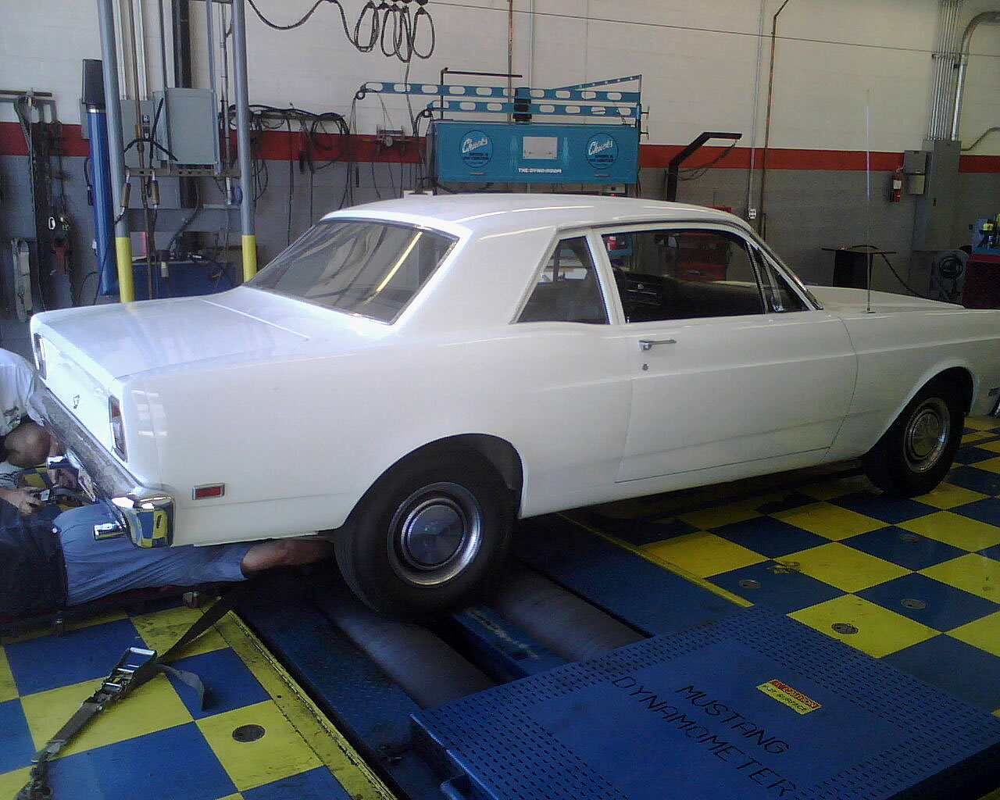

|
 |
|
|
|
Dyno Test #6 |
||||||||||||||||||||||||||||||||||||||||||||||||||||||||||||
Our first step was to establish our baseline numbers with the stock 1100 carb and the Load-O-Matic distributor. Once that was accomplished, we install the Weber 32/38 progressive two barrel carb using the 2-1 adaptor and made another pull on the dyno. Next, we pulled the stock dizzy and dropped the DUI in its place, using a relay so it got a full 12 volts from the battery. After a run with the Weber and the DUI, we installed the Autolite 240cfm, did two more pulls, then installed the Holley 350cfm and did two more pulls. Our final pass was with a used Autolite 245cfm, as we wanted to see if the additional 5cfm would make any difference in the numbers.
SUMMARY: All four carbs were within a 4HP range, with the Autolite 240 making the least, and the Holley 350 producing the most. Even in its poor condition the Autolite 245 made nearly as much as the Weber, yet both produced slightly less than the Holley. The torque was nearly identical for all four carbs. Eventually, I'd like to try an Autolite 351 or a 356 to see how they'd compare to the Holley 350, as the horsepower appears to be directly relational to the size of the carb. Assuming the Autolite carbs were to small, and the fact that all three Autolite's made an average of .345HP per cfm (as compared to the Weber and Holley at .25 and .28 respectively), then an Autolite 356 would produce around 123HP (356x.345=123). While logic tells me this is doubtful, it's certainly worth investigating, and we'll be sure to let you know how it works out if we get the opportunity to test one. In the end, the Holley and DUI were worth a net gain of 25 HP and 13 LBS of torque over the stock carburetor and distributor, which resulted in a 29% gain in rear wheel horsepower. Remember, this motor was recently rebuilt and already had a performance cam and headers. Once the engine is broken in and the rings fully seated, I'm guessing the numbers will be slightly better.
One problem we noticed was that the motor seemed sluggish below 2500 rpm, but once it got going it seemed to accelerate much better. I'm guessing the cam timing is retarded, maybe by as much as 6-8 degrees, as it wasn't degreed when it was installed. Clay Smith recommends installing the cam 4 degrees advanced, as their cams are ground straight up, therefore it's at least 4 degrees off. However I'm guessing it's even more, based on how sluggish the motor was, as an inline six should make considerably more bottom end power.

| ||||||||||||||||||||||||||||||||||||||||||||||||||||||||||||
{kind=link}
{kind=link}

[ home ]
Copyright 2012 - Classic Inlines - All Rights Reserved